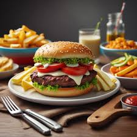

Classis Burger

Description
A classic burger consist of a juicy, seasoned beef patty grilled to perfection,
sandwiched between two soft, toasted buns. It is typically dressed with fresh lettuce,
a slice of ripe tomato, and crisp onions, topped with a tangy slice of melted cheese.
A dollop of ketchup and mustard adds just the right kick, making this classic burger a
go-to comfort meal for any occasion. For an extra layer of flavor, pickles can be added for
a zesty crunch, while a side of golden, crispy fries perfectly complements the burger's savory
goodness. Simple yet satisfying, this timeless favorite never goes out of style.
Ingredients
- 1 large egg
- ½ teaspoon salt
- ½ teaspoon ground black pepper
- 1 pound ground beef
- ½ cup fine dry bread crumbs
- Fresh vegetables of your choice
Steps to make a Classic Burger
- Preheat an outdoor grill for hight heat and lightly oil grate.
- WHisk egg, salt and pepper together in a medium bowl.
- Add ground beef and bread crumbs; mix with your hands or a fork until well blended.
- Form into four 3/4-inch-thick patties.
- Place patties on the preheated grill. Cover and cook 6 to 8 minutes per side, or to desired
doneness. An instant-read thermometer inserted into the center should read at least 160 degrees F (70 degrees C).
- Put the bread, next put the meat and finally the vegetables of your choice. Put the other layer of bread and that's it.